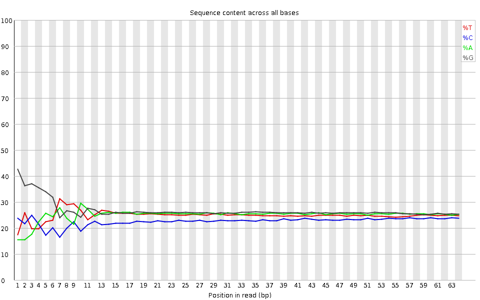
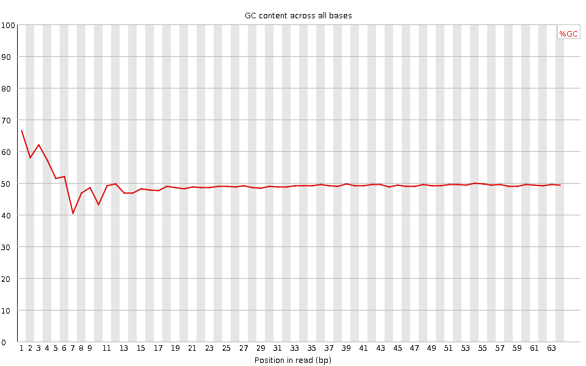
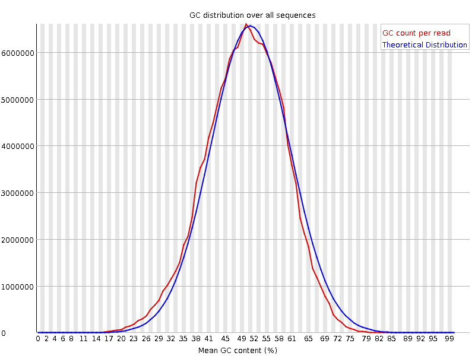
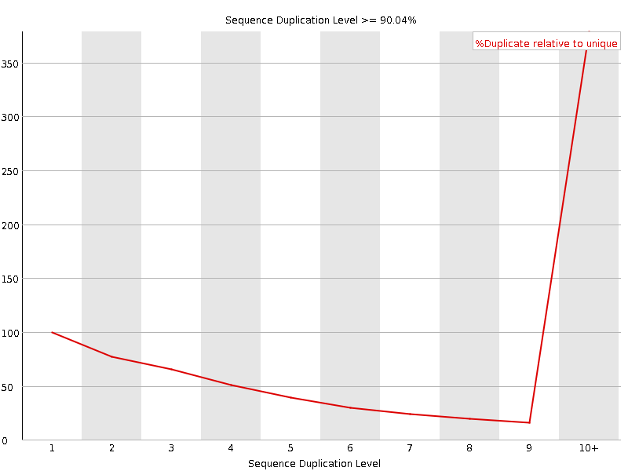
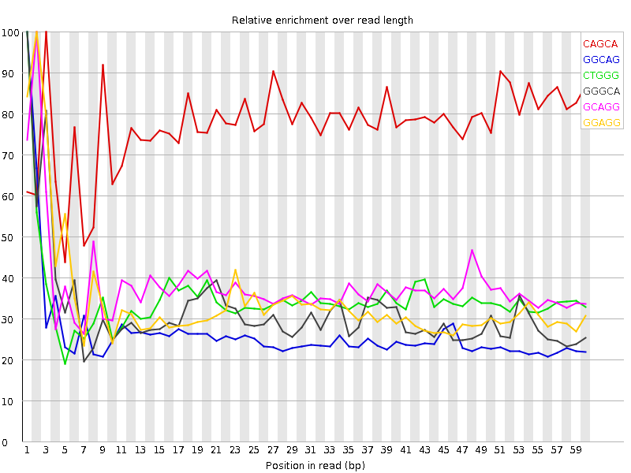

![[OK]](Icons/tick.png) Basic Statistics
Basic Statistics
| Measure | Value |
|---|---|
| Filename | SRR387661_pe_1.f.fastq |
| File type | Conventional base calls |
| Encoding | Sanger / Illumina 1.9 |
| Total Sequences | 100574020 |
| Filtered Sequences | 0 |
| Sequence length | 64 |
| %GC | 49 |
Per base sequence quality

Per sequence quality scores

![[FAIL]](Icons/error.png) Per base sequence content
Per base sequence content

Per base GC content

Per sequence GC content

Per base N content

Sequence Length Distribution

Sequence Duplication Levels

Overrepresented sequences
No overrepresented sequences
![[WARN]](Icons/warning.png) Kmer Content
Kmer Content

| Sequence | Count | Obs/Exp Overall | Obs/Exp Max | Max Obs/Exp Position |
|---|---|---|---|---|
| CAGCA | 16229170 | 3.0276752 | 3.9145195 | 3 |
| GGCAG | 14183425 | 2.0914128 | 7.90947 | 1 |
| CTGGG | 13839865 | 2.0523913 | 5.907252 | 1 |
| GGGCA | 13631330 | 2.010004 | 6.330231 | 1 |
| GCAGG | 12988170 | 1.9151669 | 5.0130467 | 2 |
| GGAGG | 14706875 | 1.832457 | 5.3553376 | 2 |
| GGGAG | 12647325 | 1.5758401 | 6.2762594 | 1 |
| GGGGA | 12243795 | 1.5255609 | 7.658296 | 1 |
| TGGGG | 11806620 | 1.4794786 | 5.242462 | 1 |
| GGGGG | 12644600 | 1.4737015 | 8.03156 | 1 |
| GTGGG | 11553465 | 1.4477559 | 7.623588 | 1 |
| GGGTG | 11389710 | 1.4272358 | 5.1845694 | 2 |
| GGGGC | 10259120 | 1.4150109 | 5.496961 | 2 |
| GGGGT | 10794715 | 1.3526776 | 6.2219796 | 3 |
| CGGGG | 8445130 | 1.1648123 | 7.5813427 | 1 |